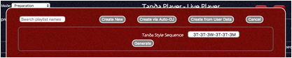
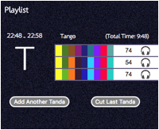

Using the Live Player
Getting started
From the home page click the playlist icon
Once you have a playlist, click the “play from the beginning” button to start it playing and to lock down the application into live mode.
Choosing where to start from
Initially the DJ will open the live player having built up a collection of tandas. Then switch to the Preparation mode to get the controls with which to design a playlist. Then open either an old playlist to start from or click on ‘Create New’ to create a new empty playlist.
Opening an old playlist is just a case of clicking on its name.
If you want to remove an old and no longer needed playlist, just click the delete button next to its name.

The only controls up-front for a new playlist is to define the sequence you would like to follow such as the Tango-Tango-Waltz etc. and how many tracks of each type to use. Note that this defines the sequence the system will expect you to follow but you override it as you go.
Adding at least a couple of Tandas ahead of what is playing
is a good thing as far as the display board is concerned. The display board
will automatically put the words “Final Tanda” on the screen and so unless it
really is the last one you will want to have one in reserve.
Using the Auto-DJ to create
Tandas for you allows you to in addition state how many hours of playlist you
require and how often any given artist may repeat. Setting this to zero means
you could end up with two consecutive tandas by the same orchestra.
The system puts together
tandas based on similarity of the songs including their tempo and their notes
etc. If you wish each tanda to only feature one artist then you can request
this too.
The sensitivity is an
advanced setting and the higher the value the more picky the system is about
how similar songs must be to make a tanda. If you set this too high it might
not be able to make any tandas for you. Too low and it might stick songs
together which do not appear similar to you at all.
The final option is to use your own pre-made tandas but in a system generated playlist. This is quite labour saving for regular events. In addition to the controls already described you have the option to avoid tandas played recently and those that feature in one or more of your saved playlists
Defining your playlist in more detail
Once you’ve set your options, click on “generate” and wait a moment while it builds the playlist for you.
If you plan on saving the playlist give it a name. Then set the additional options as to whether you want this to be the playlist the system automatically plays when it is powered up etc.
The Scheduled Start time field is a planning tool. If your event will start at say 10pm then enter 22:00 in the field. Now each tanda you add will be shown along with the time it is likely to start and end. Note these times are approximate because, and especially if you are using cortinas, it does not know how much time will go on spacing and padding and cortinas and whether you pause or slow down songs etc. However, during the actual live event as each song is played the times are continuously updated. If you speed a song up or slow it down then second by second the approximate start times will be adjusted.

The times are shown above the style letter which is the large letter to the left.
The length of the tanda is also shown.
Building the playlist – searching for tandas
To add a tanda on to the bottom of the playlist use the button shown above to the bottom left. To remove it again just click the other button.
Once you have clicked the add (or swap tanda) button you will get a chance to search using your chosen properties.
If you do not have a tanda already for a given song you can try the Auto-DJ. It may be able to help depending upon the classification data and number of songs to choose from. Tick the “User Auto-DJ” button and the “Prefer same artist” check box if required. Make sure that the “Songs per Tanda” is set to a value other than “Any”. Then search. This time instead of tandas it will offer songs that match. Pick a song and the system will try to generate 10 tandas with the chosen song as the first song. You can then pick one of these or search again. Note you can if necessary switch to the Tanda Designer application page and create a tanda there and then come back to the live player and search for the new tanda.
The songs per tanda will be adjusted according to your planned tanda lengths as above and may change for each tanda. When searching this can be adjusted to any number. Setting to zero will search for any size tanda.
Either move a slider, tick a box or enter some search text etc. and mix these as you need to define the sort of music you want. Then click the search button. If you click cancel you will simply return to the playlist.
Having searched the system will return matching tandas. Note that if you untick the ‘style’ checkbox then it will not be constrained to just the expected style so you could have a break and play some Salsa or Jazz or even have a folk dance or two.
Click the symbol on the left of the tanda to add this as your chosen tanda into the playlist.
If there are any songs in the Tanda that are also in the current playlist anywhere then it will be marked with the two overlapping circles. Hover the mouse over this and it will tell you which songs in particular.
Tandas are automatically assigned a unique number when they are created. You can search for this directly and the numbers are shown when the tandas are listed as shown here on a search result and also in the main playlists and even the print outs of playlists.
To search for a specific tanda if you do know its number (Such as 40 in the image above), just enter a hash followed by the number into the search box and search.
There is nothing to stop you adding the same tanda twice or even pick one that has songs used elsewhere etc. You can then always either go and change the other tandas or leave them if that is what you wanted.
If the application is running in preparation mode when double clicking on a song the system will present a slider control which allows the DJ to jump to random parts of the song to, for example, miss out the middle part and just listen to all the transitions between songs and tandas.
Cortinas
You do not have to use cortinas even if a playlist you have opened was last used with them. Simply choose “none” from the list.

If your USB cortinas folder has sub-folders with music in it then these will appear as sets of cortinas you can use. Any music at the top level is considered “General” and there must be one song at this level on the USB device. As shown here, a folder called “Pop” results in that being a selectable set of cortinas:
The songs in the Pop folder are shown here and can then be seen as possible cortinas. By default the system will just allocate them after shuffling them; one between each tanda. But the DJ can pick any specific one from the list.
Clicking the headphones next to a Cortina will play it for the DJ privately.
If your dancers seem to like the Cortina, you may choose to play another one and you can do this by using the + button on the right hand side. NOTE that these cannot be removed again once added so leave it to the last moment! Otherwise you will have to resort to manual control and stop the playlist and then resume from later in the playlist.
To change it just click on the name and the list will be shown. The Cortina being worked on will be highlighted with a red circle.
You can scroll the list by hand or you can type in some part
of the name and the list will filter to show the matching rows. Once you know
the one you want, simply click on the replacement required.
Bug
warning - Once a playlist has started, switching off the use of Cortinas will
cause issues with the current version and so a refresh (stop playlist, refresh
browser, re-start playlist) is required. Otherwise the system will show the
wrong song as being played.
However, switching between sets of cortinas is not an issue whilst live.
Note that you may wish to have your cortinas in your main music folder too as this way you can (whilst a Cortina is playing and if people start to dance to it) you can quickly search for a style such as Cortina or whatever you create and pick another song as the first song of the next tanda and give the dancers another one if you are feeling generous!
NOTE if you are in Manual mode and wish to resume from a cortina somewhere in your playlist, double-click to the area just left of the headphone side of the cortina window – i.e. the space around it or even over the Tanda’s description or title.
Dance Demonstration Playlists
A dance demonstration requires the DJ to often provide the music and IF the music required happens to also be in the DJ’s collection then the DJ can create a Tanda of them and use this in a special performance using the special performance window.
IF, and only IF, the Tanda Player has the music that is to be played during a dance demonstration then the new feature can be used. (If not - then unplug the TP from the PA or use another PA channel) and plug in their laptop or whatever and play through the PA as normal)
The workflow is that you can build a special Tanda in advance or whilst live (remember that you can do this whilst playing live but with some reduced functionality but it still works OK) and remember its name or ID.
In the live player in any operating mode (live / manual) you can now click on the little tab at the bottom of the screen. See the bottom of this image
Opening the special performance window starts off blank. You can either search for text within songs or tandas or you can use the standard Cortina picker. Choosing a song or a Tanda adds a special performance entry. You can add zero, one or more performances - no limits except it might become a little unusable with very large lists of tandas!
Clicking the “Return to Playlist” at any time does not stop any music even if playing a track from the special performance - it just closes the new window - and it can be re-opened using the tab.
Clicking the “Search” button will start the search for the entered text. Note that entering text and entering return or clicking off the field will also invoke the search. The search may take a few seconds to complete. Be patient.
The search returns the usual display of matching songs and tandas. Use the tabs as required and locate the single song or Tanda to use. For tandas, click the usual “add to playlist” icon. For songs, click on the song.
Once added, it cannot be removed but you can always add another one and ignore the first if needed.
Using the “Pick from Cortinas” button produces the usual pop-up from which to select the song. This will be added into the special performance list.
Note that if you are using display boards/screens/projectors, then text can be displayed when the performance songs are played. I.e. the display board will operate as normal until a song in the special performance list as above is clicked to play. For example you might want to show the performer’s names. Or at least stop the changing background from distracting anybody in which case you can leave the text blank. A special static screen is shown from the moment the song is played until the DJ returns the playlist back to “manual” mode and resume playing from the playlist.
Note that the text is sized to be as large as possible on the screen. Fewer words means larger text!
When you are ready to play the music for the performance, you just tap/click on the song to play. Nothing happens at this stage except the row is highlighted ready.
Now whilst maintaining eye contact with the performers you can just press the “space bar” on your keyboard and the highlighted song will play. Alternatively you can just click the play icon on the row instead. It plays immediately and once ended the system stops and no more songs play automatically. You have to repeat these steps for each song in the performance as the performers become ready.
Note that as soon as you play a song, the system switches mode to the “Special Performance” mode and the DJ must set this back to “Manual” once the performance has finished otherwise the system will not allow the double-clicking on any song to resume playing from the playlist! This mode is used to change the behaviour of the display board and shows the special text if used.
Whilst a song is playing you can use the usual “stop” buttons, volume and tempo adjustment controls (even though they are part of the background behind the new window!). You can also close the window and return to the playlist to do something else such as add or manipulate the playlist if you are not too interested in the demonstration!
Once the performance is over, you can switch back to the playlist and set the operating mode to “Manual” if not already done. Then you can double click on the song or cortina you want to resume from and it will resume and continue to play from that point onward.
When the Tanda Player is shutdown it forgets the performance data and will be clean and ready for next time. By using Tandas, the songs are remembered though and this Tanda should either then be deleted or kept if required.
TIP! If you use the feature to play songs that are not a special demonstration but for example a folk dance or an additional cortina-like song then you can ask the playlist to resume once finished without having to sit there and press buttons: The songs will play in the “stopping” mode and so an additional icon is shown in the top right corner to clear this state which in turn will mean the song will end and the next natural song from the playlist will be played next automatically. Click on the right-most icon of these four to clear the “stopping” mode. Note that you may wish to then also put the playlist back into manual mode to enable the display board to resume too!
Note - this feature could be used in regular milongas for example to put some sets of Salsa or Jive together or have some folk dances etc. ( or a closing “La cumparsita” just in case you have to finish earlier than planned ) sitting in this list just in case. Then during an evening you can simply suspend the playlist and play from this window instead. Once done, you simply resume from wherever you want to. So if you play folk dances in place of say a Milonga Tanda, then you can resume at the tanda after the milonga one just by clicking on the cortina area at the top or on the first song directly. But whilst it plays from this new list you have to be at the controls to play any ‘next’ songs as this new system plays one song at a time and then stops - as this is what you would want for live dance demonstrations.
Note – It might also help in dance classes too in place of a regular playlist if it easier to jump around and play one song at a time or play again and again.
Note - Any connected DMX controlled lights will come up to full brightness because the playlist has stopped. Whilst the special songs play the lights stay up! Then when you resume the playlist they will dim down again automatically.
Another thing to note is that although when choosing the demo tanda you can see if any tracks duplicate with those in your playlist, this does not work the other way around - i.e. if you have songs in the demo list and then go back to the playlist to add another tanda, it will not know about the demo songs and will not highlight duplicate songs!